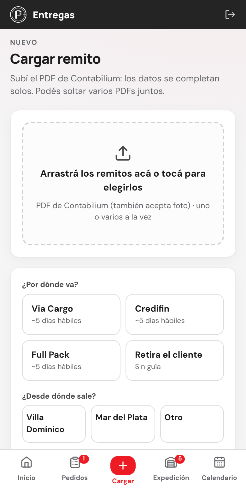
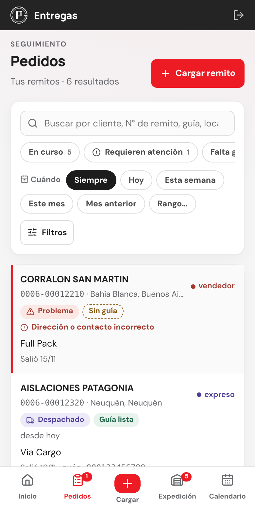
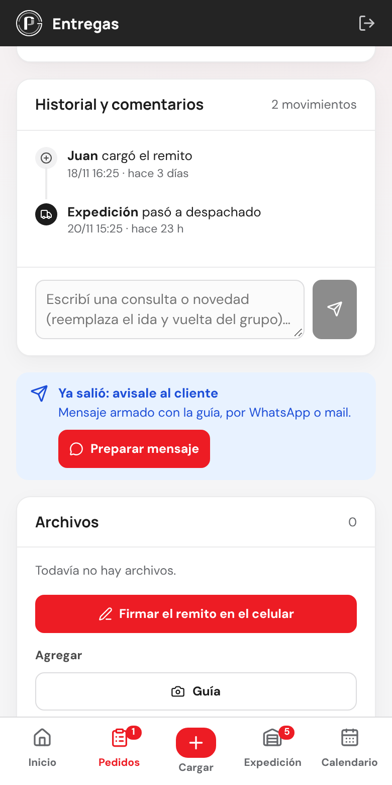
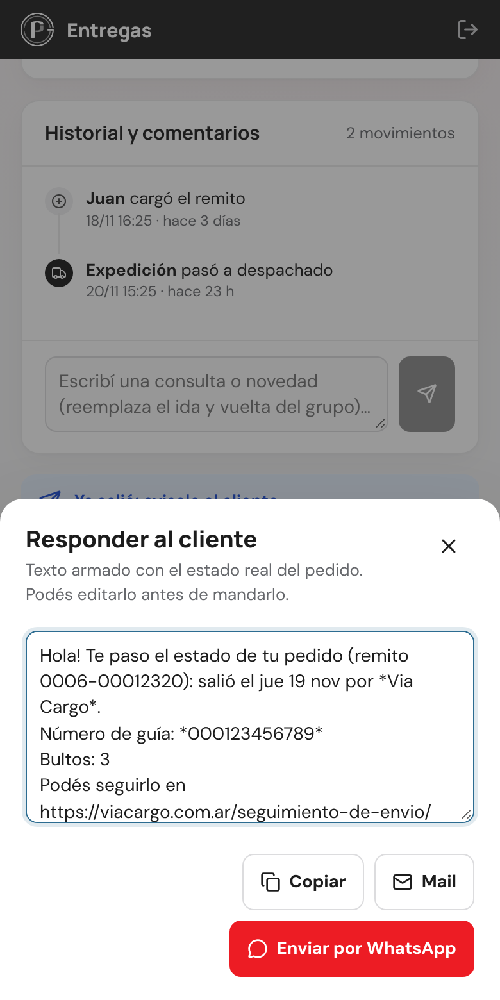
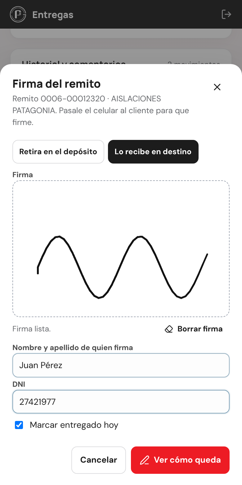

Grupo Poliplast
Grupo Poliplast
Cómo entrar
Entrá con tu mail @grupopoliplast.com.ar y tu contraseña.
Abrir el CRM- Primera vez: cambiá la contraseña en Menú → Más → Perfil (mínimo 8 caracteres).
- En el celular, como una app: en Android (Chrome), menú ⋮ → «Instalar app». En iPhone (Safari), Compartir → «Agregar a pantalla de inicio».
- En el celular, abajo tenés Inicio, Tareas, Ventas, Empresas y Menú con todo lo demás. En la compu, el menú está a la izquierda.
- Ctrl + K (en la compu) abre el buscador general: clientes, tareas, productos y pantallas.
¿Una sección no te sirve?
El CRM lo usamos completo, pero no todos necesitan todo. Si hay un módulo que no usás y te llena de información, avisale a Felipe y te lo saca de tu menú. Lo podés pedir de vuelta cuando quieras.
Lo que cargás en tu cuenta (tareas, notas, prospectos) es tuyo. Lo compartido (competencia, directorio de empresas, fichas técnicas) lo puede sumar cualquiera del equipo.
En esta guía
- Inicio
- Tareas
- Ventas
- Cotizador
- Entregas
- Prospección
- Centro de mejoras
- Productos
- Mercado Libre
- Shopify
- Empresas y contactos
- Mapa
- Academia comercial
- Base técnica
- El asistente
- Perfil y Datos
- Próximamente
- Preguntas frecuentes
Tocá cada sección para abrirla.
🏠InicioTu resumen del día›
Es la primera pantalla. Arrancá el día acá.
- Mi día: tus tareas vencidas y las de hoy.
- Radares: cotizaciones frías o vencidas y clientes para reactivar.
- Se pasaron de su frecuencia: clientes que compran seguido y ya deberían haber vuelto a comprar.
Tocá cualquier tarjeta para ir directo a la tarea o al cliente.
✅TareasTus pendientes con fecha›
Llamados, seguimientos, cotizaciones para mandar: todo lo que tenés que hacer, con fecha y cliente.
- Nueva tarea: título, fecha, prioridad y, si corresponde, el cliente. Al terminarla, marcala hecha.
- Se ordenan en tres grupos: Vender (tocan a un cliente o prospecto), Canales y gestión y Después (falta más de una semana).
- Algunas se crean solas: por ejemplo, al marcar «Contactado» a un prospecto se crea el seguimiento a 2 días hábiles.
- Calendario: las mismas tareas vistas por mes.
- Cierre del día: dos minutos a la tarde para anotar qué salió bien, qué quedó sin hacer, qué se posterga y qué hacés mañana.
- Si usás Trello, podés importar las tarjetas (archivo JSON exportado del tablero): suma solo las nuevas.
🧾VentasLo vendido, objetivos y precios anteriores›
- Cargá cada venta con cliente, producto y monto.
- Historial en gráficos: mensual, trimestral y semestral, con objetivos contra vendido.
- Memoria de precios: buscás un producto y te muestra a cuánto se vendió las últimas veces (siempre + IVA).
- Piso de comisión: cada uno carga su piso mensual y ve la comisión del mes.
🧮CotizadorArmar precios para el cliente›
- Elegís productos y cantidades y te arma la cotización con fotos, lista para copiar por WhatsApp o pasar a PDF.
- Busca clientes del CRM y, si no existe, lo podés dar de alta ahí mismo.
- Al enviarla, el precio queda congelado y se crea solo un seguimiento a 2 días hábiles.
- Una cotización NO es una venta: no se guarda en Ventas.
🚚EntregasRemitos, despachos y avisos al cliente›
Reemplaza el ida y vuelta por el grupo de WhatsApp con expedición: vos cargás el remito y expedición lo ve en el momento. Fechas: prueba del 24/11 al 30/11; desde el lunes 01/12 es obligatorio en los dos depósitos (Villa Domínico y Mar del Plata).
1. El inicio de Entregas
Tus pedidos agrupados: por salir, sin stock, en viaje, sin guía o firma, con problema y entregados. «Mis pedidos» muestra los tuyos; «Todos», los del equipo. Abajo, las Novedades: cuando expedición imprime, despacha o sube la guía, te aparece ahí.

2. Cargar un remito
- Tocá Cargar remito y subí el PDF de Contabilium (también acepta una foto). Podés subir varios juntos.
- Los datos del cliente se completan solos: revisá teléfono y dirección.
- Elegí por dónde va (expreso o «Retira el cliente») y desde qué depósito sale. Guardá. Ojo: viene marcado Villa Domínico; si sale de Mar del Plata, cambialo. En las listas el depósito se ve en color: azul Villa Domínico, naranja Mar del Plata.

3. Seguir tus pedidos
Cada pedido pasa por Cargado → Impreso → Despachado → Entregado (o Frenado / Con problema, con el motivo). A la derecha dice a quién le toca.
- Guía lista ya tiene número o foto de la guía.
- Firmado ya tiene el remito firmado.

4. El detalle del pedido
Cuándo salió, por qué expreso, el número de guía con su link de seguimiento, quién lo despachó y el historial. En Historial y comentarios le escribís a expedición; en Archivos están el remito, la guía y el remito firmado. Si te equivocaste en un dato: Datos de envío → Editar.

5. Avisarle al cliente con la guía
Cuando sale, aparece «Ya salió: avisale al cliente» → Preparar mensaje. Viene armado con expreso, guía, bultos y link; lo mandás por WhatsApp, por Mail o con Compartir con la guía (en el celular va con la foto de la guía adjunta).
Si retira el cliente, el mensaje («Responder al cliente») ya dice dónde y cuándo: Villa Domínico, Magdalena 962, o el depósito de Mar del Plata, de lunes a viernes de 8 a 16, con el link del mapa.


6. Remito firmado: en papel o en el celular
El remito firmado se puede guardar de dos formas. Ninguna es obligatoria: se usa la que convenga en cada entrega.
- En papel: el cliente firma el remito impreso y se le saca una foto. La foto se sube en el pedido, en Archivos.
- En el celular: en Archivos → Firmar el remito en el celular el cliente firma con el dedo y se cargan su nombre y DNI. La firma queda puesta sobre «Recibí conforme» del mismo remito.
Con cualquiera de las dos, el pedido muestra Firmado.

🔎ProspecciónClientes nuevos y clientes para reactivar›
Para salir a buscar ventas todos los días. Está en pestañas:
- Cola del día: listas cortas para trabajar hoy, con el mensaje listo para copiar: Reactivar (clientes que dejaron de comprar), Cotizaron y no compraron, Se pasaron de su frecuencia, Prospectos nuevos y Momentos de sorpresa (agradecer a quien compró grande, cumple años como cliente o volvió). Anotás el resultado en un toque (interesado, precio, ya tiene proveedor, no respondió…) y lo trabajado no vuelve por 14 días.
- Qué aprendimos (dentro de Cola del día): qué mensaje, familia y zona responden mejor, los motivos de rechazo más comunes y cuántas cotizaciones terminan en factura.
- Prospectos: la lista completa, con ficha, WhatsApp con el primer mensaje armado y botón para leer su sitio web.
- Orden de llamada: los prospectos que más valen, ordenados por zona y ciudad. Por cada uno: «Hablé», «No atendió» o «No le sirve…».
- Limpieza: sugiere cuáles conviene descartar y cuáles priorizar.
- Buscar con IA: pedís un rubro y una zona y trae empresas del mapa.
- Respuestas rápidas: textos listos para WhatsApp (abrir la charla, objeciones, seguimiento, pasarlo con alguien) y respuestas técnicas por producto.
- Bandeja de salida: mails de prospección en 3 pasos para aprobar y mandar desde tu Gmail.
- No contactar: a quien pidió que no lo contacten no le vuelve a aparecer.
- Reglas: cómo se puntúa y ordena la cola (normalmente no hace falta tocarlo).
Nada se manda solo: el CRM arma el mensaje y vos lo mandás desde tu WhatsApp o tu mail.
🛠️Centro de mejorasQué arreglar en Mercado Libre y Shopify›
Una lista de trabajo para dejar prolijas las publicaciones: el porcentaje que ya está «limpio» y qué arreglar primero (sin clip, pocas fotos, sin descripción, calidad baja, sin stock, sin SKU…), con cuántas faltan y cómo vienen bajando en la semana.
Tocá Ver cuáles para ir directo a esas publicaciones.
📦ProductosTodo de un producto, por SKU›
Una ficha por SKU que junta el precio de lista del cotizador (en dólares y en pesos al dólar BNA del día), todas las publicaciones de Mercado Libre de todas las cuentas y la tienda Shopify.
- Te dice dónde conviene vender (por fuera, ML Clásica, ML Premium o Shopify) según lo que queda por unidad.
- Avisa ⚠ Precio raro cuando el precio de ML y el de la lista no cierran, catálogo perdido, calidad básica y lo que está en tendencia.
- Sirve para responder rápido «¿cuánto sale en Mercado Libre?», «¿lo tenemos en la tienda?» o «¿está en el cotizador?».
🛒Mercado LibreVentas, publicaciones, competencia y stock›
Todas nuestras cuentas en un solo lugar, cada una con su color (POLIPLAST, COMARG, FOAMFACTORY, FOAMHOME, HOMEARG1 y PURMAC). Solo mira: no cambia nada en Mercado Libre.
- Resumen: ventas, visitas, conversión, reputación y alertas de los últimos 30 días, y «Lo que preguntan y no está en la descripción».
- Publicaciones: estado, visitas, SKU y qué le falta a cada una. En Qué mejorar: la calidad según Mercado Libre, reclamos y publicaciones con muchas visitas que no venden, con el motivo probable.
- Mercado: Competencia (en los productos de catálogo: si ganamos o perdemos, el precio para ganar y quién gana) y Tendencias (lo más buscado en nuestras categorías; en naranja lo que no cubrimos).
- Dinero: Stock y ganancia: qué reponer y cuánto queda de cada venta después de la comisión y el envío.
Te sirve para saber cómo se mueve un producto antes de cotizarlo, qué precio tiene la competencia y qué está en alza. Las preguntas y reclamos de Mercado Libre los sigue atendiendo Brenda.
🛍️ShopifyLa tienda online›
- Resumen: productos activos, pedidos y facturado de 7 y 30 días.
- Qué mejorar y Productos: productos sin descripción, sin fotos, sin stock o sin SKU; buscador por nombre o SKU.
- Operación: pedidos pagos sin despachar, retiros pendientes y carritos abandonados.
- Precios vs ML: compara cada producto con Mercado Libre (regla: tienda = ML − 10 %).
- Faltan en Shopify y Ordenar catálogo: lo que se vende en Mercado Libre y no está en la tienda, y productos repetidos para juntar.
Solo mira. Los cambios en la tienda los aprueba Felipe.
🏢Empresas y contactosTu cartera de clientes›
- Cada empresa con contacto, teléfono, mail, CUIT, ciudad, etapa, familia de producto y notas.
- En la ficha, Facturación muestra lo que compró según Contabilium: última compra, cada cuánto compra y si es cliente grande o recurrente.
- Anotá cada contacto en la ficha: queda la historia para vos y para el asistente.
- Marcá «Coticé hoy» cuando le pasás precio, así después aparece en «Cotizaron y no compraron».
- El directorio compartido de empresas lo traés desde Más → Datos.
📍MapaClientes y prospectos por zona›
Tus clientes y prospectos en el mapa. Filtrá por tipo o zona para planificar visitas y ver quién queda cerca de una obra o de otro cliente.
🎓Academia comercialProductos, cómo vender y práctica›
- Productos: guías de cada producto.
- Cómo vender: el método E-C-E-R-A, las objeciones más comunes y cómo responderlas, y perfiles de cliente.
- Competencia: fichas de competidores por familia. Cualquiera puede sumar uno.
- Equipo: cada uno se describe (lo ve solo esa persona y Felipe).
- Práctica: «Practicar con un cliente (IA)»: elegís tipo de cliente y objeción, respondés como si fuera real y pedís la evaluación con nota de 1 a 10.
📄Base técnicaFichas técnicas y documentos›
- Fichas técnicas, hojas de seguridad y documentos de cada producto, por familia.
- Subir fichas y documentos: archivos sueltos o una carpeta entera.
- Qué productos tienen ficha: qué productos del catálogo tienen documentación y cuáles no.
- En Catálogo ↔ Mercado Libre → Descripción y preguntas están la descripción que más vendió y las preguntas frecuentes de cada producto, para copiar.
💬El asistentePreguntale como a un compañero›
Responde con lo que sabe el CRM y lo que el equipo respondió en Mercado Libre. Ejemplos:
- «¿Cuánto rinde el PoxiPlast?», «¿cuánto tarda en secar…?», «¿sirve para agua potable?»
- «¿Cuándo compró tal cliente?», «¿a cuánto vendimos el 770?», «¿qué tengo pendiente hoy?»
- «Quiero cotizar 200 m² de poliurea con top», o el cálculo de material de espuma (kilos y juegos según la ficha).
- «¿Qué competidores hay de poliuretano?», «¿cómo uso la Cola del día?»
También puede proponerte crear una tarea, anotar en un cliente o redactar un mensaje: vos confirmás. Con 👍 / 👎 lo vamos corrigiendo.
Si un dato importante no te cierra (precio, plazo, dato técnico), confirmalo antes de pasárselo al cliente.
⚙️Perfil y DatosTu cuenta›
- Perfil: tu nombre y cambiar la contraseña.
- Datos: traer el directorio compartido de empresas y descargar un respaldo de lo tuyo.
🔜 Próximamente
Mensajes de WhatsApp en el CRM: ver las consultas que entran por WhatsApp, con la historia de cada cliente y respuestas sugeridas. Hoy está en prueba con Felipe; cuando esté lista se suma a esta guía.
Preguntas frecuentes
¿Pierdo algo si cierro la pestaña?No. Lo que cargás se guarda en tu cuenta y lo ves igual en la compu y en el celular.
¿El CRM le manda mensajes a los clientes solo?No. Arma el mensaje y vos lo mandás desde tu WhatsApp o tu mail.
Una pantalla queda en blanco o da error.Recargá la página: suele pasar cuando se publica una versión nueva con la pestaña abierta.
No uso una sección y me molesta.Avisale a Felipe y te la saca de tu menú.
Algo no anda o veo un dato raro.Mandale una captura a Felipe por WhatsApp.